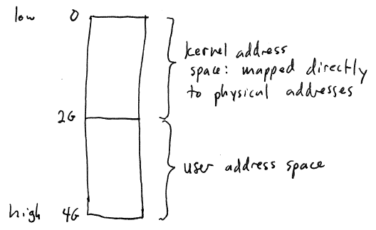
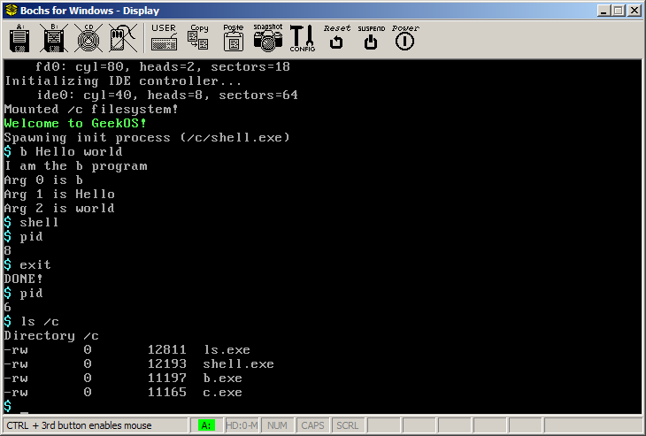

Due Thursday, November 9th by 11:59
PM
In this assignment you will start to implement support for virtual
memory in GeekOS by allocating a page directory and page tables to
define the kernel address space.
Recall that paging is the mechanism most often used to support
memory protection and virtual memory. To utilize the paging
hardware, the OS kernel builds an address
space for each process, which is a map of virtual page numbers
to physical page (frame) numbers. An address space precisely
defines the mapping of virtual to physical addresses, giving the kernel
an easy way to enforce memory protection.
One easy to overlook consequence of using paging is that the OS
kernel must also use a page directory and page tables to define its own address space, because memory
references generated by the OS kernel go through virtual to physical
address translation, just like memory references generated by user
code. In other words, any memory accessible to the kernel must be
mapped into the kernel's address space.
One of the issues the kernel faces in defining its own address space
is how to bootstrap paging
support. When a computer is turned on, it typically is running without paging enabled, meaning
that there is no virtual to physical address translation. So,
prior to turning on the CPU's paging hardware, all memory references
made by the kernel resolve directly to physical addresses.
The bootstrapping problem arises when the kernel wants its code and
data loaded into a range of virtual addresses that do not correspond to
the range of physical addresses where it is initially loaded. One
solution to this problem is for the boot loader (the program that loads
the kernel) to build an initial set of page tables for the kernel, and
enable the paging hardware before any kernel code starts running.
Another (easier) solution is to define the range of virtual addresses
used by the kernel's code and data to correspond exactly to the
physical addresses where the kernel is loaded.
Another problem that the kernel must solve in managing its own
address space is how to support the copyin
and copyout operations:
copying data from a user-space buffer to a kernel buffer (copyin) and
copying data from a kernel buffer to a user-space buffer (copyout).
If the kernel address space is completely disjoint from each user
address space, then the kernel will have to temporarily add pages of
memory being used by a user process to its own address space before
copying.
A simpler strategy is to make the kernel's address space a part of
every user process address space: in other words, each process address
space contains all of the virtual to physical page mappings that
describe the kernel address space. (One way to do this is to have
the page directory for each user process address space contain a rage
of PDEs corresponding to the range of virtual addresses used by the
kernel address space; these PDEs all contain the frame numbers of the
set of page tables defining the kernel's address space.)
Page-level protection can then be used to prevent user code from
directly accessing any kernel memory.
The drawback of the simple strategy is that the kernel may need a
substantial chunk of the address space, reducing the range of virtual
addresses available to user processes.
There are many strategies for bootstrapping paging support and
organizing the kernel's address space. GeekOS uses an extremely
simple strategy.
Bootstrapping: GeekOS loads
the kernel code and data into low physical memory (starting at address
10000H == 64K). The kernel address space in GeekOS is simply a
direct mapping of virtual addresses to physical addresses for the
entire range of physical memory. This scheme is fairly simple to
implement: paging is bootstrapped by building an initial page directory
and page tables setting up the direct virtual->physical
mapping This means that the GeekOS kernel running with paging
enabled works exactly like the GeekOS kernel running with paging turned
off: all memory references resolve to physical addresses.
Copyin/copyout: GeekOS maps
the kernel address space into every user process address space.
This means that copyin and copyout can be done using a simple
memory-to-memory copy operation (e.g., the memcpy C function).
Because the kernel's region of each user address space covers the
low virtual addresses, the user memory must be mapped in high virtual
memory. GeekOS divides up the user address spaces in the
following way:

The virtual addresses in the range 0..231-1 map directly
to
physical memory and may only be accessed by the kernel. The
virtual to physical mappings in this range are the same in every
address space. The virtual addresses in the range 231..232-1
are
available in each address space for the code, data, heap, and stack
memory used by the user process.
To preserve the illusion that user-accessible virtual addresses in
each address space start at zero, GeekOS makes use of the segmentation
hardware. Specifically, in each user process, the base and limit
registers are each set to 231 (2G), creating the illusion
that
user
addresses range from 0..231-1. (This works because
memory
references made by user code first
are translated by the segmentation hardware, and then are translated by the paging
hardware.)
Your task for this assignment is to build a kernel address space by
allocating and initializing a page directory and page tables creating a
direct mapping of virtual addresses to physical addresses for the
entire range of physical memory.
Start by downloading project2a.zip.
This is an enhanced
version of GeekOS that supports user processes and enforces memory
protection using segmentation.
If you are doing your development on cygwin, you will also need to
download a special
version of the GNU development tools. You should extract this
zip file in the root directory of your C: drive. When you start a
cygwin bash shell, execute the following command:
export PATH=/cygdrive/c/binutils-i386-elf/bin:$PATH
This will allow the GeekOS makefile to find the updated development
tools.
Your task is to implement the Init_VM()
function in the file src/geekos/paging.c.
This function's sole responsibility is allocating and initializing a
page directory and page tables for the kernel address space.
Recall that the page directory and page tables are all one page in
size. In GeekOS, you can allocate a single frame of physical
memory using the Alloc_Page() function: for example:
g_kernelPageDir = Alloc_Page();
would allocate a single (physical) page of memory and assign a
pointer to that memory to the g_kernelPageDir global variable.
The page directory is simply an array of page directory
entries. A page directory entry in GeekOS is a value whose type
is pde_t. You can see
the definition of this type in the header file include/geekos/paging.h:
/*
* Page directory entry datatype.
* If marked as present, it specifies the physical address
* and permissions of a page table.
*/
typedef struct {
uint_t present:1;
uint_t flags:4;
uint_t accesed:1;
uint_t reserved:1;
uint_t largePages:1;
uint_t globalPage:1;
uint_t kernelInfo:3;
uint_t pageTableBaseAddr:20;
} pde_t;
Each field of the pde_t type
represents a range of bits in a page directory entry. (You may
find it useful to look at the notes
for lecture 16, which describes how paging works in the x86
architecture.) For example, the present
field corresponds to the p bit
that specifies whether a particular PDE has the frame number of a valid
page table (1 means that it does, 0 means that it doesn't.)
You will need to set each of the 1024 entries in the page directory
to either
(1) Refer to a valid page table, or
(2) Indicate that the range of virtual
addresses covered by the page table entry is not mapped
Because the kernel's address space is simply a direct map of
physical memory, you only need to add PDEs for the amount of physical
memory that is installed. You can find this information in the
Boot_Info structure that is passed to the Init_VM() function:
bootInfo->memSizeKB
indicates the amount of installed physical memory in kilobytes.
You can start out by clearing all of the page directory entries:
memset(g_kernelPageDir, '\0', 4096);
This will ensure that each entry in the page directory is initially
unmapped.
Let's say you want to make a single page directory entry point to a
freshly allocated empty page table. Here's how you would do this
for page directory entry 1, which covers the range of virtual addresses
from 4,194,304 (4M) to 8,388,608 (8M):
{
pte_t *pageTable;
pde_t entry = {0};
/* Allocate a page table and clear it */
pageTable = Alloc_Page();
memset(pageTable, '\0', 4096);
/* Create a page directory entry pointing to this page table */
entry.present = 1;
entry.flags = VM_USER | VM_WRITE;
entry.pageTableBaseAddr = ((ulong_t) pageTable)) >> 12;
/* Install the PDE in index 1 of the page directory */
g_kernelPageDir[1] = entry;
}
You will need to install PDEs for each range of physical memory, up
to the amount of physical memory indicated by
bootInfo->memSizeKB. Each PDE will need to have its own
freshly allocated page table.
Once the page directory has been fully prepared with page tables for
each range of physical addresses, you will need to install page table
entries (PTEs) in each page table. In GeekOS, PTEs are
represented by the pte_t data
type, also defined in include/geekos/paging.h:
/*
* Page table entry datatype.
* If marked as present, it specifies the physical address
* and permissions of a page of memory.
*/
typedef struct {
uint_t present:1;
uint_t flags:4;
uint_t accesed:1;
uint_t dirty:1;
uint_t pteAttribute:1;
uint_t globalPage:1;
uint_t kernelInfo:3;
uint_t pageBaseAddr:20;
} pte_t;
The structure is almost exactly the same as pde_t. A page table is an
array whose element type is pte_t.
There are 1024 entries in a page table, same as the number of entries
in a page directory.
Recall that PDE 1 covers the range of memory addresses starting at
4,194,304 (4M). That means that the first PTE (index 0) in the
page table we installed in the code example above should map to the
frame whose physical address is 4,194,304. We could use the
following code to install that PTE:
{
/* Get a pointer to the page table pointed to by PDE 1 */
pte_t *pageTable = (pte_t *) (g_kernelPageDir[1].pageTableBaseAddr << 12);
pte_t entry = {0};
entry.present = 1;
entry.flags = VM_USER | VM_WRITE;
entry.pageBaseAddr = (4194304U >> 12);
}
Your task boils down to making sure that each PDE and each PTE are
set up properly. You will need to generalize the examples above
to figure out how to initialize each PDE and each PTE.
Once your page directory and page tables have been completely
initialized, you can turn on the paging hardware as follows:
Enable_Paging(g_kernelPageDir);
The very last thing you should do is register the handler for the
page fault interrupt:
/* Install the page fault handler */
Install_Interrupt_Handler(14, Page_Fault_Handler);
In later projects you will be able to use the page fault handler to
implement a full virtual memory system, but for now it will not do
anything.
Assuming all goes well, you should be able to run Bochs and boot
into a functioning GeekOS system. The GeekOS disk image will
contain a command interpreter (shell) and several executable
programs. Here is a screenshot showing how to run several of
these programs:

Use "make -j 2" to compile faster (taking advantage of hyperthreaded
or multicore CPUs).
You will probably need to edit the "bochsrc.txt" file in the build
directory so that the romimage and vgaromimage correctly refer to the
directory in which you installed Bochs.
Submit a zip file containing your entire project2a directory to the My YCP
Inbox for Assignment 5. (Please do a "make clean" first.)